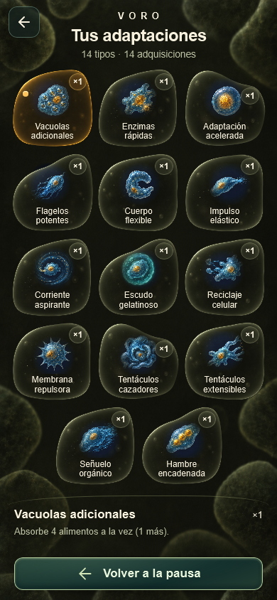
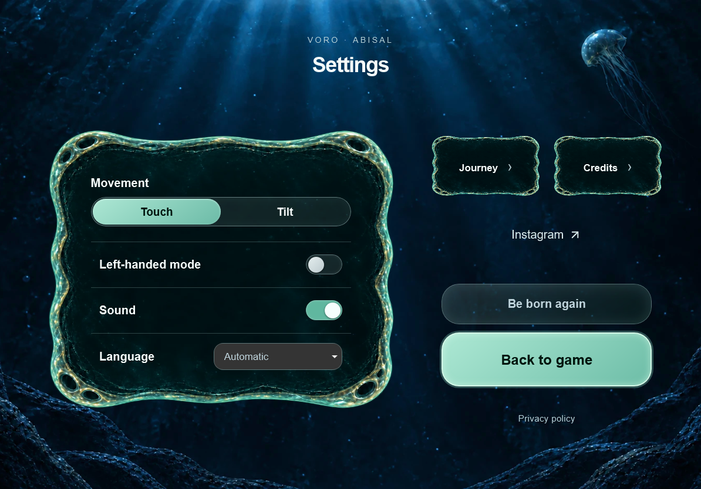

99/99 campañas completas · 12 pruebas de interfaz · sin modo de desarrollo.
| Entorno | Media | Mediana | Completadas |
|---|---|---|---|
| Microscopio | 8:28 | 8:17 | 90/90 |
| Charca | 8:37 | 8:24 | 90/90 |
| Orilla | 8:30 | 8:08 | 90/90 |
| Mar | 9:07 | 8:43 | 90/90 |
| Ciudad | 8:05 | 7:28 | 90/90 |
| Órbita | 7:33 | 5:56 | 90/90 |
| Planetas | 8:33 | 7:42 | 90/90 |
| Estrellas | 7:45 | 7:19 | 90/90 |
| Galaxias | 7:13 | 6:27 | 90/90 |
| Universo | 5:11 | 5:03 | 90/90 |
Simulación del motor real, no tiempo garantizado de un jugador ni prueba de FPS del móvil. Método y límites · Resultados completos

